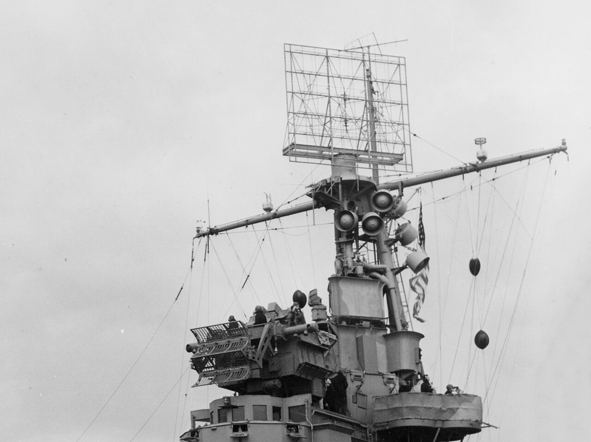
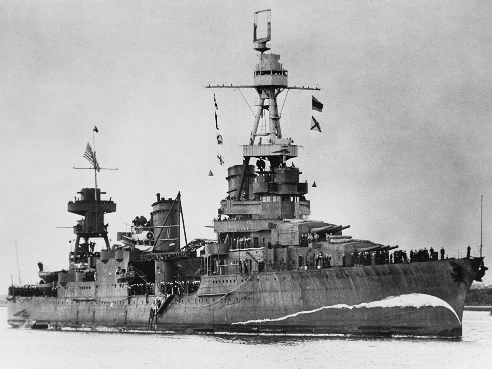
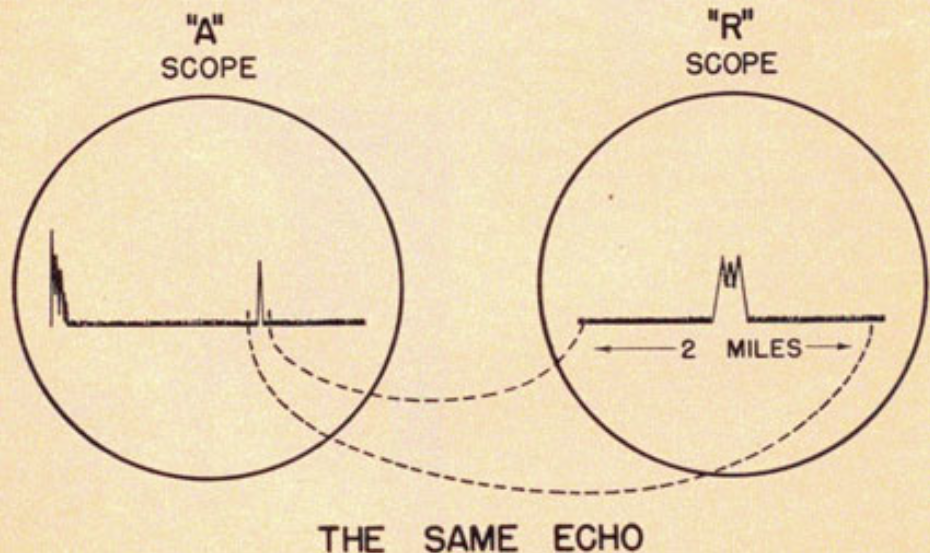
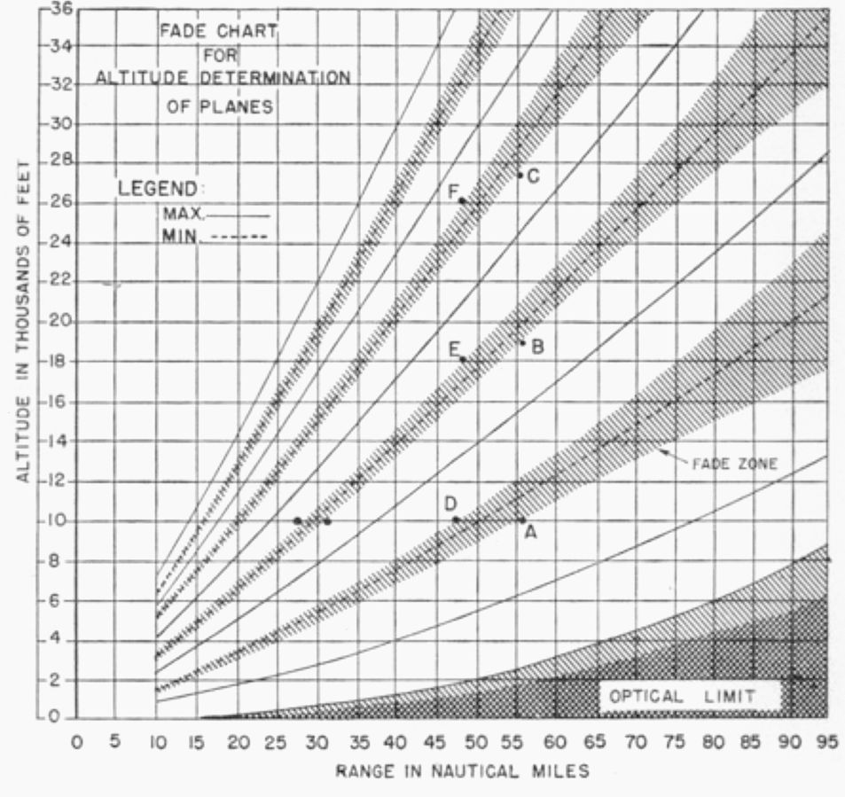
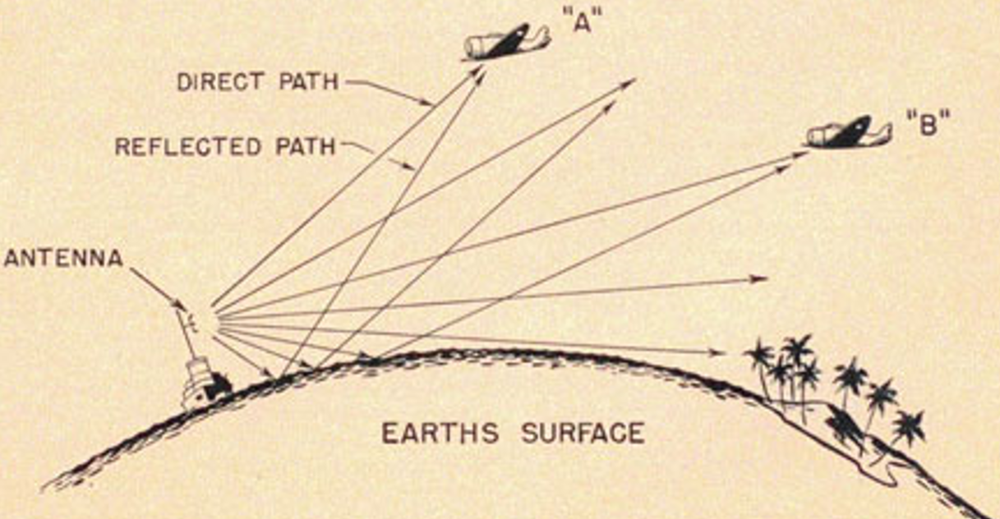
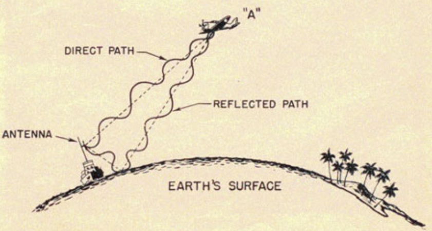
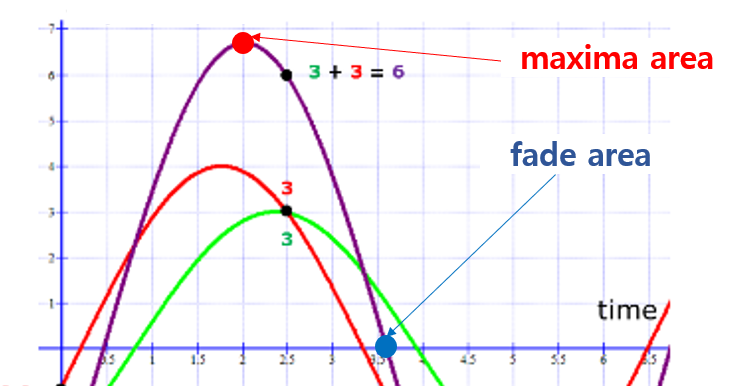

레이더 개발 이야기 (54) - 방위각, 거리, 그리고... 고도!
게시: 2023-11-09T06:30:47+09:00
<레이더 운용사의 고난> 이렇게 혁혁한 공을 세우는 CXAM radar를 가진 항모 USS Lexington도 결국 산호해 해전에서 일본 뇌격기들의 어뢰를 쳐맞고 해저로 꼬로록. 여태까지의 활약을 보면 천리안 역할을 하는 CXAM 레이더 덕분에 천하무적일 것 같은데 대체 어떻게 된 것일까? 일단 왜 렉싱턴이 물고기밥이 되었는지를 이해하려면 먼저 당시의 CXAM radar를 이해해야 함. 당시 레이더 운용사의 근무 위치는 CXAM radar 안테나 바로 아래에 위치한 좁고 작은 방이었는데, 왜 이 레이더 운용사는 전투기 관제사 및 작도병들이 있는 radar plot room에서 함께 근무하지 않고 혼자 레이더 바로 밑에서 근무해야 했을까? 이유는 미군들이 flying bedspring이라고 불렀던, 꽤 큼직한 크기의 CXAM radar 안테나는 사람이 손으로 돌리는 것이었기 때문.

(항모 USS Ranger (CV-4, 1만7천톤, 29노트)의 아일랜드 꼭대기에 설치된 CXAM radar 안테나. 모양새를 보면 왜 저걸 수병들이 휘날리는 침대 스프링이라고 불렀는지 이해가 가실 거임. 함교 바로 위에 설치된 갈퀴 모양의 그물망 같은 것은 Mark 33 gun director에 딸려 있는 Mark 4 radar의 안테나)

(순양함 USS Northampton (CA-26, 1만톤, 32노트) 삼각대 망루 위에 설치된 CXAM radar) 이 안테나를 천천히 계속 돌리다가 뭔가가 A-scope 상의 초록색 수평선 상에 '삑'하고 pip (위로 치솟은 신호)이 나타나면 그 쪽 방향 몇 마일 밖에 뭔가가 나타났다는 것을 알게 되는 것. 구체적인 방위각은 저 커다란 레이더 안테나를 이리저리 돌려가며 신호 감도를 잰 뒤에야 알 수 있었음. 그리고 숙련된 운용사는 해당 A-scope의 time base, 즉 스코프 횡단면의 초록색 수평선 눈금을 확대 조정하여 pip의 패턴을 좀 더 자세히 분석한 뒤에 저것이 대략 몇 대로 구성된 편대인지 추측이 가능.

(초기 레이더의 A-scope에는 평상시 초록색 수평선만 조용히 흘렀는데 뭔가 잡히면 저렇게 초록색 선이 위로 툭 튀어 올랐음. 옆의 R-scope는 그 pip 부분만 확대해서 볼 수 있는 scope. R-scope에서는 저 pip이 몇 대의 항공기로 구성된 것인지 더 자세히 분석할 수 있다고.)
그러니까 나중에 개발된 PPI scope처럼 대번에 목표물까지의 거리와 방위각이 한번에 자동으로 계산되어 나오는 것이 아님. 당연히 이런 작업에는 시간이 걸림. 따라서 어느 한 방향에서만 적기 편대가 나타난다면 상대하기가 그다지 어렵지 않으나, 여러 편대가 여러 방향에서 한꺼번에 나타나면 좁고 불편한 레이더실에 혼자 앉은 운용사는 제대로 감당해내지 못하는 경우가 생겼음.
그리고 결정적인 문제가 있었음. 바로 고도. 아군 함대를 노리고 날아드는 적기들을 요격하려면 적기까지의 거리와 방위각은 물론이고 특히 고도에 대한 정보가 중요했음. 일반적으로는 적기보다 높은 고도에서 기다리다 내리 꽂으며 공격하는 것이 유리하긴 했는데, 그렇다고 너무 높은 위치에서 대기하다가는 저공으로 침투하는 적기를 아예 못 보고 놓치는 경우가 발생함. 특히 항모 전단을 방어하는 입장에서는 이게 굉장히 골치 아픈 문제. 왜냐하면 영국 도시를 폭격하러 오는 루프트바페 폭격기들은 대개 폭격에 알맞은 일정한 고도인 약 2~3km 상공으로 날아오는 것이 보통인데, 함대를 공격하러 오는 일본 해군 편대들은 급강하 폭격기인 경우 2만 피트, 뇌격기인 경우 수천 피트 상공으로 제각각 날아드는 경우가 많았기 때문. 그러니 적기가 고공으로 오는지 저공으로 오는지가 매우 중요. 방향을 제대로 잡아도 까딱하다간 못 보고 지나칠 수도 있고, 보긴 보더라도 요격기보다 훨씬 저 높은 상공으로 날아드는 적기를 잡기 위해 고도를 높이느라 소중한 시간과 거리를 낭비하는 경우도 있기 때문. 그런데 잠깐, 아까 flying bedspring 안테나를 이리저리 돌리며 거리와 방위각을 계산하던 과정 중에 고도를 재는 과정이 있었던가? 없었음. 그럼 대체 고도는 어떻게 측정한다는 거지? <뜻밖의 발견> 지상의 고정 기지에 수많은 인력과 장비, 시설을 배치할 수 있었던 영국 공군의 경우 큰 문제가 없었음. 방향만 정해지면, 전에 소개한 벨리니-토시 전파방위각 측정기 (Bellini–Tosi direction finder)의 작은 코일을 위 아래로 돌려가며 고도를 측정하기도 했고, 레이더 송신 안테나에서 목표물로 곧장 날아간 전파의 반사파와 먼저 대지에 한번 부딪힌 뒤에 날아간 전파의 반사파와의 시간 차이를 재어 고도를 측정하기도 했음. 그러나 그건 모두 더 많은 장비와 더 많은 계산 인원을 필요로 하는 작업. 그래서 미해군은 고도를 어떻게 측정했을까? 처음에는 이것저것 해보다가 그냥 남자답게 깔끔하게 포기. 방위각과 거리만 알아내도 큰 이득이라고 스스로를 위로했던 것. 그런데 이 CXAM radar를 이런저런 상황에서 이렇게저렇게 테스트하다 기묘한 현상을 발견함. 바로 fade area (소멸 지대)의 발견. 운용사들은 원거리에서 포착한 항공기가 자함으로 접근해오는 것을 추적하다가 가끔씩 그 항공기를 놓치는 것을 공통적으로 경험. 처음엔 그냥 흔한 장비적 결함이거나 날씨 탓 등을 생각했는데, 가만히 보니 너무나 뚜렷하게 반복적으로 같은 현상이 발생하는 것을 보고 표를 만들기 시작. 그 결과 알아낸 사실은 다음과 같았음. - 이 현상은 항공기의 크기와 종류에 상관 없이 발생 - 특정 거리, 특정 고도의 조합에서만 발생함 - 레이더의 종류에 따라, 좀 더 정확하게는 주파수에 따라 이 현상이 발생하는 거리와 고도의 조합이 다름 결국 표를 그려보니, CXAM 레이더에서는 이 fade area는 거리와 고도의 함수로 표시가 가능했음. 다시 말하면, 다가오는 항공기를 끈기 있게 추적하면서 어느 거리에서 이 항공기가 잠깐 사라지는지를 보고 그 항공기의 고도를 추측할 수 있다는 뜻.

(진하게 칠해진 영역이 항공기가 레이더에서 잠깐 사라지는 fade area. 보시다시피 거리와 고도의 함수로 나타나지만, 그 영역이 꽤 넓어서 이를 통해 추정하는 고도는 그다지 정확하지 않았음.) 처음에는 이런 현상이 왜 생기는지 군인들은 이해하지 못했으나, 물리학자들과 전기 기술자들에 의해 원인이 밝혀짐. 요약하면 수면 반사파의 상쇄 간섭 때문. 아래 그림처럼 레이더 송신 안테나에서 발사되는 전파는 항공기로 곧장 날아가기도 하지만, 먼저 수면으로 향했다 수면에 의해 반사되어 항공기에 도달하기도 함. 이 두 전파가 각각 항공기에 부딪혀 되돌아올 때 이동하는 거리가 다르므로 어떤 거리에서는 서로 상쇄 간섭을 일으키기도 하는 것.

(직접 항공기로 가는 전파와 수면 위에 튕겨서 가는 반사파를 설명하는 그림)

(하나의 항공기에서 반사되어 돌아오는 전파는 재수가 나쁘면 서로 위상 간섭을 일으켜 상쇄 되기도 함)

(두 개의 전파는 합쳐져서 보강을 해주기도 하지만 어떤 위상 차에서는 완전히 상쇄를 해버리기도 함. 가장 큰 보강이 일어나는 부분이 maxima area, 완전한 상쇄가 일어나는 부분이 fade area.)
이렇게 측정된 고도 정보는 오차가 매우 심해서 5~6km 정도 차이가 나는 것도 흔했고 1~2km 정도는 양호한 편이었음. 그런데 진짜 문제는 오차가 아니라 고도를 짐작이라도 하려면 한참 동안 그 항공기를 추적 관찰하면서 그 항공기가 fade area를 어느 지점에서 지나가는지 지켜봐야 한다는 것. 당연히 시간도 오래 걸렸고, 어떤 경우엔 아예 fade area가 나타나지 않기도 했음. 가장 큰 문제는 여러 대의 적기가 각기 다른 방향에서 나타날 때의 문제. 레이더는 하나 뿐인데 여러 편대에 대해 각각 거리 계산하랴 방위각 측정하랴 하다 보면 고도 정보도 알아내기 위해 끈질기게 추적 관찰할 수가 없었음. 그리고 그건 결국 렉싱턴의 운명을 결정 지음. (다음 주에 계속)